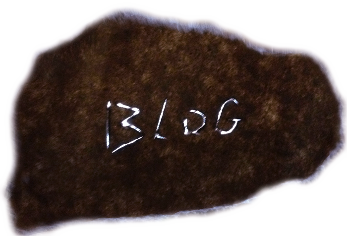
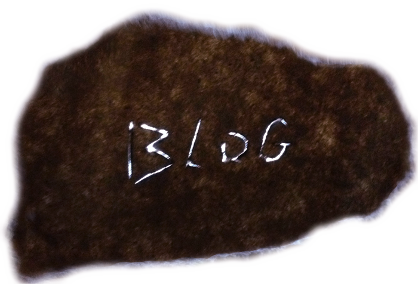

EDUCATION
Edinburgh University, MFA Photography, 2010 - 2012
Massachusetts College of Art & Design, BFA Photography & Sculpture, 2006 - 2010
Project Basho , Philidelphia, PA Contemporary Daguerreotypes with Takashi Arai Anderson Ranch, Snowmass, CO BrittonieFletcher.com Brittonie@gmail.com 2010 - 2012 2006 - 2010 November 2009 July 2009 Extending the Image with Mia Semingson Penland School of Crafts, Penland, NC Spring Concentration 2004 Blacksmithing with Jim Cooper and Elizabeth Brim Museum of Fine Arts Boston Metals/ Sound Exhibitions 2012 EdinburghCollegeofArtGraduateShow Henderson’s Gallery, Edinburgh UK 2011 HardcoreandTheGentle,EdinburghCollegeofArt Forest Art Auction, Axo Gallery, Edinburgh UK No Name, Total Kunst, Edinburgh UK Co2 Project Space, Edinburgh College of Art 2010 Heroes, Clemente Soto Valez Gallery, New York, USA Lost and Found, Nave Gallery, Cambridge MA, USA 2002- 2003 2009 2008 2007 2006 2004 2003 2002 Mass College Art and Design, Grad Show, Arnhiem Gallery A Million Little Pictures, 111 Minna Gallery, San Francisco, CA Hasta El Peru, Godine Gallery, Boston, MA A Million Little Pictures, Art House Co-op, Atlanta, GA Sideshow Attraction, The Middle East, Cambridge, MA NACCC Art Show, The Fourth Wall Project, Boston MA Photography BFA Thesis Show, MCAD, Boston, MA All School Show "Best in Show ", President's Gallery MCAD, Boston, MA All School Show, Arnhiem Gallery, MCAD, Boston, MA Story Time, Student Life Gallery, MCAD, Boston, MA INsite Photography Project Silent Auction, Brattleboro, VT Spite, A4 Gallery, Boston, MA Solo show Magical Realism, Student Life Gallery, MCAD, Boston MA All School Show, Arnhiem gallery, MCAD, Boston, MA All School Show, President's gallery, MCAD, Boston MA Shutter, Galleria Boston at News, Boston, MA Solo show All School Show, Godine gallery, MCAD, Boston MA Fort Point Open studios, Boston, MA Not Riding, Elevated Gallery, Boston, MA Northlight, Penland School of Crafts, Penland, NC Anderson Gallery, School of the Museum of Fine Arts, Boston, MA InPictures,CitiUniversiti,Paris,France Collections Axo Gallery, Edinburgh, UK Special Collections, Norlin Library, University of Colorado at Boulder Art History Department, Massachusetts College of Art Numerous Private Collections Publications The Skinny, Edinburgh UK December 2011 Life and Fate, Cover, Random House, UK, Canada and E book April 2011 Fill In The Blank Gallery March 7, 2010 http://www.fillintheblankgallery.com/interviews/2010/3/7/brittonie-fletcher Unless You Will blog March, 2010 January 2010 MCAD, Photography Senior Thesis Catalogue 2009 Boston's Weekly Dig, Dig this January 14 2008 JPG Magazine Issue 7, Shoot Yourself, page 87 Awards and Grants 2007 2010 2009 2007 2006 2005 2004 2002 MassArt Scholarship Anderson Ranch Fellowship awarded by Laura McPhee All School Show, “Best in Show” and “Best Curator” MassArt Scholarship MassArt Academic Travel Scholarship to Poland and Czech Republic MassArt Scholarship Home Depot Cash Grant MassArt Scholarship Absolute Vodka Cash Grant Penland Work Study Grant Burning Man Grant Residencies & Project based Travel Artist Residency Transylvania, Romania April 2010 Subsidised by Swiss Cultural Programme Romania and Arts Council Switzerland Egypt and Israel Residency La Panza Del Artist, Cusco, Peru Documenting Medieval Wooden Architecture Poland, Slovakia, and the Czech Republic photographing architecture for Rick and Laura Brown. Objective to collect information which would help to recreate the Zubludow Synagogue in Krakow, Poland. http://Handshouse.org/zabludow.html Artist Residency, Cite Universitaire, Paris, France August 2002 March 2010 June 2009 June/July 2007 Professional Experience Alternative Process Workshop for Scottish Parliament Feb 24, 2012 Brief history of photographic development, explore parliament and holy rood, convert digital images ready for printing in environmentally safe UV developed chemistry . For High school students and Parliament Staff. Forest Artist Facilities Coordinator 2010-2011 Darkroom, screen printing and rehearsal space maintenance, classes and workshop maintenance and lecturer, European Volunteer Service Project Supervisor, Sound Engineering, Art Auction Director, and Event Manager. Student Union, MFA photography Edinburgh College of Art Artist Lecture at Inspace, School of Informatics Guest Lecturer, MassArt Photography Department Research Assistant for Dr. John M. Russell 2010-2011 December, 2010 May 2010 Fall 2009- Spring 2010 Facilitate research pertaining to archaeology work done in Syria between 1991 and 2002. Teaching assistant Ancient Art of Iraq course Student Government Rep BFA Photography at MassArt Fall 2008- Spring 2009 bid and delegated department budget, arrange lectures and field trips, Created and maintained the Photography Department bog (http://photomassart.blogspot.com/), planned trips and events on and off campus, chaired the Class of 2009 Senior Thesis Show, designed and created postcards Senior Thesis Auction, and Catalogue Committee Fall 2008- Spring 2009 Liaison for the foundation department, filled out event registration and alcohol forms, sequenced all donated books and prints, collected funds, met with purchasing and acquired bids from publishing companies, assisted in design of catalogue, kept senior class informed, advise class of 2010 MassArt Photography Digital Lab Monitor Fall 2008- Spring 2009 Maintenance of computers, assist students with queries or problems, complete diagnostics on printers, replace inks Teaching Assistant for Eirik Johnson’s Major Studio Digital class Fall 2008 Contributed to lectures, critique and in class studio work, assisted students Working with; digital capture with Nikon and Cannon, film scanning from Epson and Silverfast, Bridge, Photoshop 3 and 4, Lightroom, Epson laser printers. Teaching Assistant for Netrice Gaskins’ Visual Language class Fall 2006 Contributed in lectures, critiques, assisted students with in and out of class projects. Commissions Econogreen / Econverte Plastics 2010- Present Graphic design old logos, creation of new logos, product photography and website Commercial Shoot for Revolution Bicycle Repair October 2009 Photography of interior/ exterior, product photography in digital & analogue Wedding photographer for the Marrow – Brown ceremony January, 2009 Photography pre wedding, ceremony, reception, portraits, digital & analogue Wedding photographer for Mr. and Mrs. Glen Featherstone August 2008 Photography pre wedding, ceremony, reception, portraits, digita & analogue Documentation of Serena Elliston’s two-floor yurt May & October, 2007 Photograph construction process and final product, digital and analogue